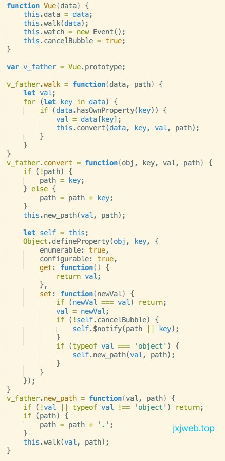

vue核心原理03
动态数据绑定:如何监听其属性的读取与变化？
也就是说，如何知道程序访问了对象的哪个属性，又改变了哪个属性？
知识点:事件传播机制
问题
深层次数据变化如何逐层往上传播
let app2 = new Observer({
name: {
firstName: 'shaofeng',
lastName: 'liang'
},
age: 25
});
要实现的结果如下：
app2.$watch('name', function () {
alert('我的姓名发生了变化!');
});
app2.data.name.firstName = 'hahaha';
// 输出：我的姓名发生了变化!
firstName 和 lastName 作为 name 的属性，其中任意一个发生变化，都会得出以下结论："name 发生了变化."这种机制符合”事件传播“机制，方向是从底层往上逐层传播到顶层. DOM也一样,比如：“点击某一个DOM元素，相当于也其父元素和其所有祖先元素.”（当然，你可以手动禁止事件传播） 所以，这里的本质是："浏览器内部实现了一个事件传播的机制"!
原理
实例出Vue对象时,对传入数据对象的每一个属性添加监听函数,并记录每一个属性的路径
在记录过程中;在 defineProperty中的 set 中添加发布方法;只要修改某个数据对象时就启动发布方法
为事件对象添加监听方法;绑定符合条件时要触发的函数
当修改某个数据对象的值得时候;触发发布方法;调用监听方法;通过对比数据对象所对应事件对象上是否有绑定方法;确定是否触发相关的绑定函数
定义事件构造函数

定义 Vue 构造函数并添加对数据对象的侦听方法

定义发布方法

定义订阅方法

js源码
function Event() {
this.events = {};
}
Event.prototype = {
on: function(attr, callback) {
if (this.events[attr]) {
this.events[attr].push(callback);
} else {
this.events[attr] = [callback];
}
},
off: function(attr) {
for (let key in this.events) {
if (this.events.hasOwnProperty(key) && key === attr) {
delete this.events[key];
}
}
},
trigger: function(attr, ...arg) {
this.events[attr] && this.events[attr].forEach(function(item) {
item(...arg);
})
}
}
function Vue(data) {
this.data = data;
this.walk(data);
this.watch = new Event();
this.cancelBubble = true;
}
var v_father = Vue.prototype;
v_father.walk = function(data, path) {
let val;
for (let key in data) {
if (data.hasOwnProperty(key)) {
val = data[key];
this.convert(data, key, val, path);
}
}
}
v_father.convert = function(obj, key, val, path) {
if (!path) {
path = key;
} else {
path = path + key;
}
this.new_path(val, path);
let self = this;
Object.defineProperty(obj, key, {
enumerable: true,
configurable: true,
get: function() {
return val;
},
set: function(newVal) {
if (newVal === val) return;
val = newVal;
if (!self.cancelBubble) {
self.$notify(path || key);
}
if (typeof val === 'object') {
self.new_path(val, path);
}
}
});
}
v_father.new_path = function(val, path) {
if (!val || typeof val !== 'object') return;
if (path) {
path = path + '.';
}
this.walk(val, path);
}
v_father.$notify = function(path) {
const keys = path.split('.');
const paths = keys.map((key, index) => {
if (index === 0) {
return key;
} else {
let str = '';
while (index--) str = keys[index] + '.' + str;
return str + key;
}
});
paths.forEach((path) => {
this.watch.trigger(path);
});
}
v_father.$watch = function(attr, callback, cancelBubble) {
if (typeof callback !== 'function') {
console.log('应该使用函数作为回调');
return;
}
this.watch.on(attr, callback);
this.cancelBubble = cancelBubble || false;
}
jxjweb.top
感想
通过 vue 源码的学习,我感觉受益还是很大的:
- 是通过看源码/临摹代码;对面向对象这种编程方式认识加深了;以后写代码的质量会提高
- defineProperty/递归思想/发布订阅模式/事件传播机制这些停留在纸面上的概念都有了具体实际的认识
- 看复杂代码感觉;感觉自己的原生 js 水平提高了;通过临摹一些代码;仔细分析它的运行过程;对递归有了深刻的认识;理解了发布与订阅模式的基本原理;对文档对象模型冒泡的机制事件就是事件对象的基本原理有新的认识